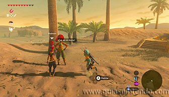
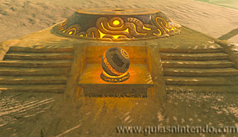
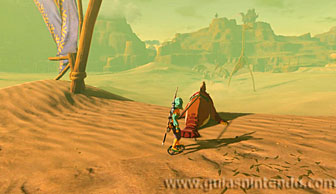
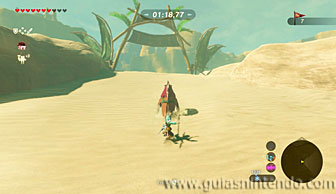
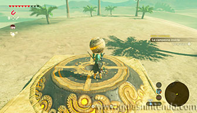
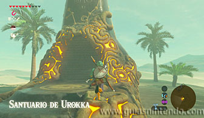
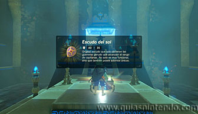
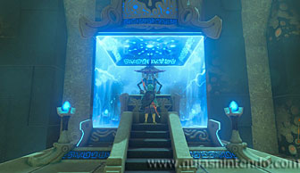

Se encuentra en la región de la torre del cañón, pero no podrás entrar hasta que no hayas derrotado a la bestia divina de esta zona. Si lo has hecho, tendrás que completar primero una Prueba heroica (La campeona invicta) para que la entrada aparezca. Para activar la prueba tienes que ir a la zona Carrera en morsa, situada al sur de la ciudadela. Habla con Shaboen y se activará la prueba. Si la superas, conseguirás como premio la esfera para activar el santuario.

La prueba consiste en hacer una carrera contra el tiempo en morsa (en menos de 1 minuto 30 segundos) pasando por debajo de 7 arcos. Si te caes de la morsa, te dejas algún arco sin pasar por debajo o no llegas a tiempo, no completarás la prueba y tendrás que repetirla. No es complicado conseguirlo, el recorrido no es muy enrevesado y no hay curvas cerradas. Solo debes estar atento para no dejarte ningún arco y si no te caes al chocarte con una roca conseguirás llegar con tiempo de sobra.

Si lo consigues podrás coger la esfera que hay delante del pedestal y colocarla en el agujero que tiene este para hacer aparecer la entrada del santuario.

Una vez dentro avanza hasta las escaleras y abre el cofre para conseguir un Escudo del sol. Ahora solo debes dirigirte al altar para conseguir el símbolo de valía correspondiente.
